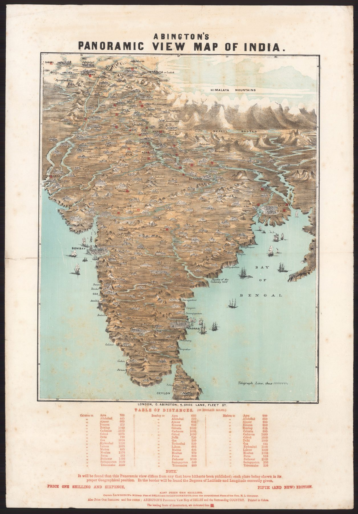

← Administered Empire and Victorian Atlas

Date and object
The panorama was advertised in August 1857 and announced as “now ready” that September; it went through at least five editions, and surviving examples are variously dated 1857 and 1858.
News geography
Unlike a conventional plan, the image tilts the subcontinent into pictorial depth. Cities, routes and conflict sites can be taken in together. The format belongs as much to illustrated news and wall display as to formal cartography.
The uprising as spectacle
Marking the “leading seats of insurrection” gives the sheet an urgent topical function. It helps a distant metropolitan audience organise unfamiliar names and reports, but it also packages violence and political crisis as a consumable panorama.
The gaze
At least five editions in 1857 and 1858 measure the appetite. The panorama sold because the names in the newspapers needed somewhere to go, and a tilted, coloured India let a household place them without learning a map. The geography underneath is borrowed from the surveys; the urgency is the sheet’s own.
In the Deccan timeline